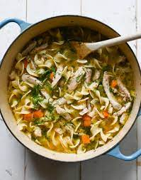

Chicken Noodle Soup

Description
This is my grandma's chicken noodle soup recipe. It's very savory
and tasty, and I think everyone will like it. Use smoked chicken for
even more flavor!
Ingredients
- 2.5 cups wide egg noodles
- 1 tsp vegetable oil
- 12 cups chicken broth
- 1.5 tbsp salt
- 1 tsp poultry seasoning
- 1 cup chopped celery
- 1 cup chopped onion
- 0.5 cup cornstarch
- 0.25 cup water
- 3 cups diced, cooked chicken meat
Steps
-
Bring a large pot of lightly salted water to a boil. Add egg
noodles and oil, and boil until noodles are tender, about 8
minutes. Drain, rinse under cool running water, and drain again.
-
Bring a large pot of lightly salted water to a boil. Add egg
noodles and oil, and boil until noodles are tender, about 8
minutes. Drain, rinse under cool running water, and drain again.
-
Bring a large pot of lightly salted water to a boil. Add egg
noodles and oil, and boil until noodles are tender, about 8
minutes. Drain, rinse under cool running water, and drain again.